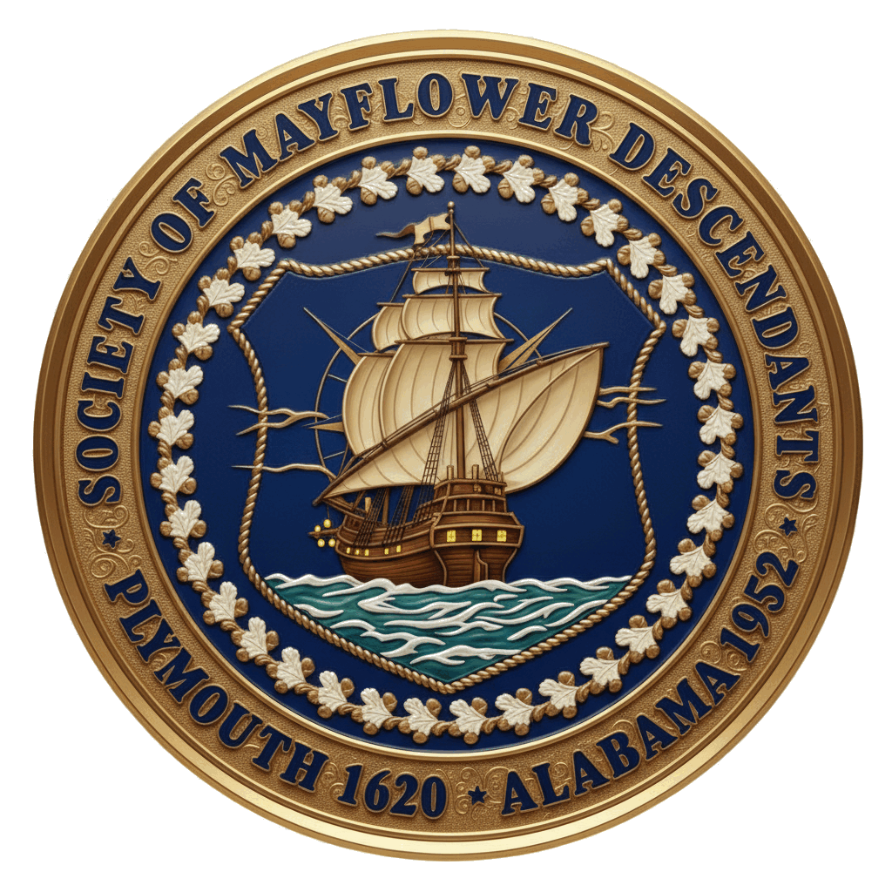
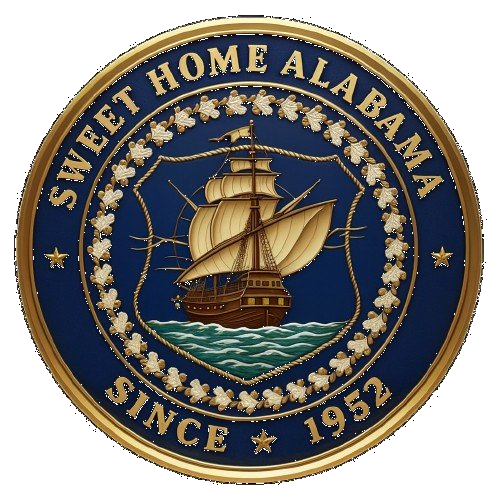

"We Will Plymouth Rock You"
2026 Annual State Conference | Mobile, AL


Welcome to the Alabama Mayflower Society
The Alabama Society of Mayflower Descendants welcomes inquiries and appreciates interest in our activities and publications. Our members all have demonstrated direct descent from the Pilgrims or their companions who bravely crossed the gale-ridden Atlantic in the Mayflower in 1620.
Founded in 1952, we organized as a society to commemorate the spirit of these brave people who had such strength in times of adversity. Beginning with the signing of The Mayflower Compact, our ancestors created a self-governing community founded upon democratic principles.
Membership Eligibility
You are eligible to join our society if you can provide documentation demonstrating that you are a direct descendant of a passenger who sailed to New England on the Mayflower in 1620.
If you believe you would qualify as a member, we urge you to complete our Lineage Synopsis Form.
Society Officers
STATE OFFICERS:
GOVERNOR: Kevin Duane Sellew of Mobile County
DEPUTY GOVERNOR: Brian Edward House of Madison County
SECRETARY: Regena Campbell Dawson of Madison County
TREASURER: VACANT / Brian Edward House of Madison County ACTING Treasurer
HISTORIAN: Harold Kenyon of Lauderdale County
ELDER: Nell Rose Brackett of Shelby County
CAPTAIN: Nancy Capell Logan of Jefferson County
LIBRARIAN: Alan Davis of Montgomery County
COLONY LT. GOVERNORS:
Cahaba River Colony: M. Inge Tingle of Jefferson County
Capital Colony: VACANT
Gulf Coast Colony: Kevin Duane Sellew of Mobile County
Tennessee Valley Colony: Carolyn Wadleigh Fowler of Madison County
Have a Question?
We value your questions and comments. Please email us and we will do our best to respond to your inquiry in a timely manner.
Please include:
✓ Full Name
✓ Phone Number
✓ Email Address
✓ Brief message outlining your request for information